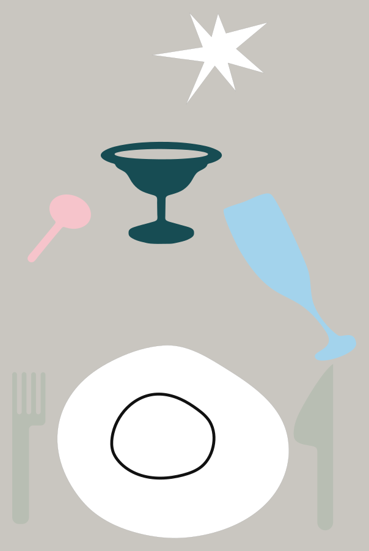

Векторы, снятые с фотографии сервировки. Каждый файл в натуральную величину (мм), по одной фигуре на файл. Раскладка ниже повторяет расположение на столе.

SVG · PDF — вся сервировка, серый фон не печатать